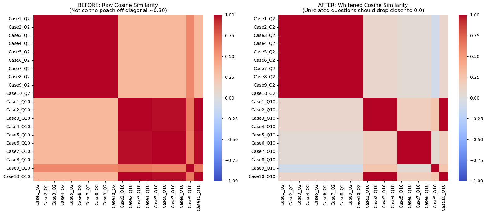
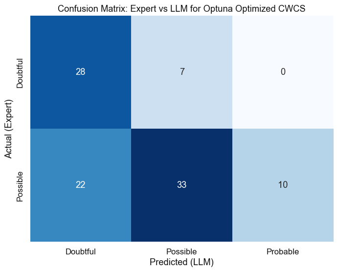
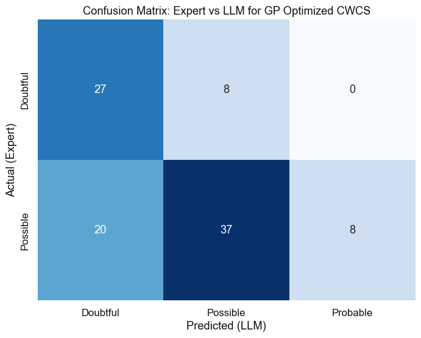
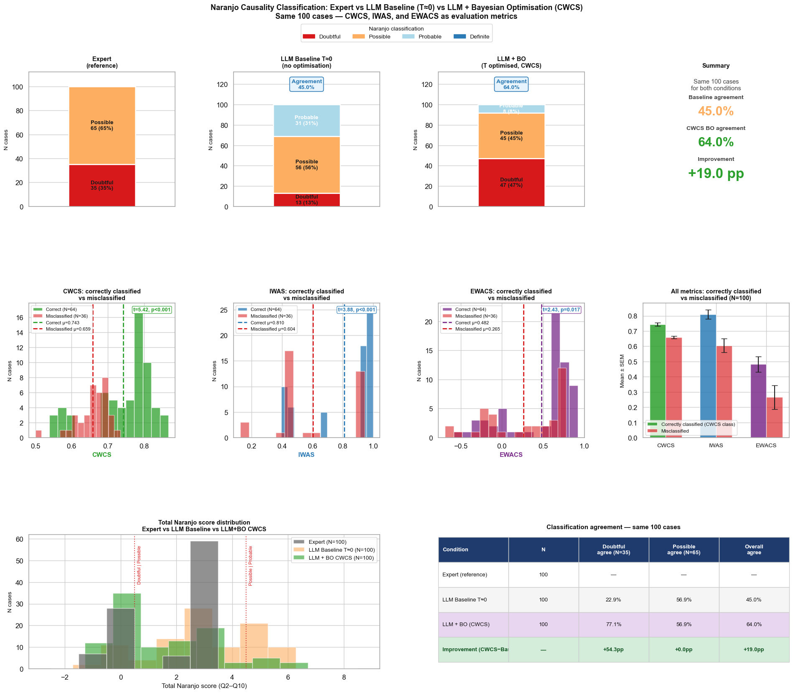
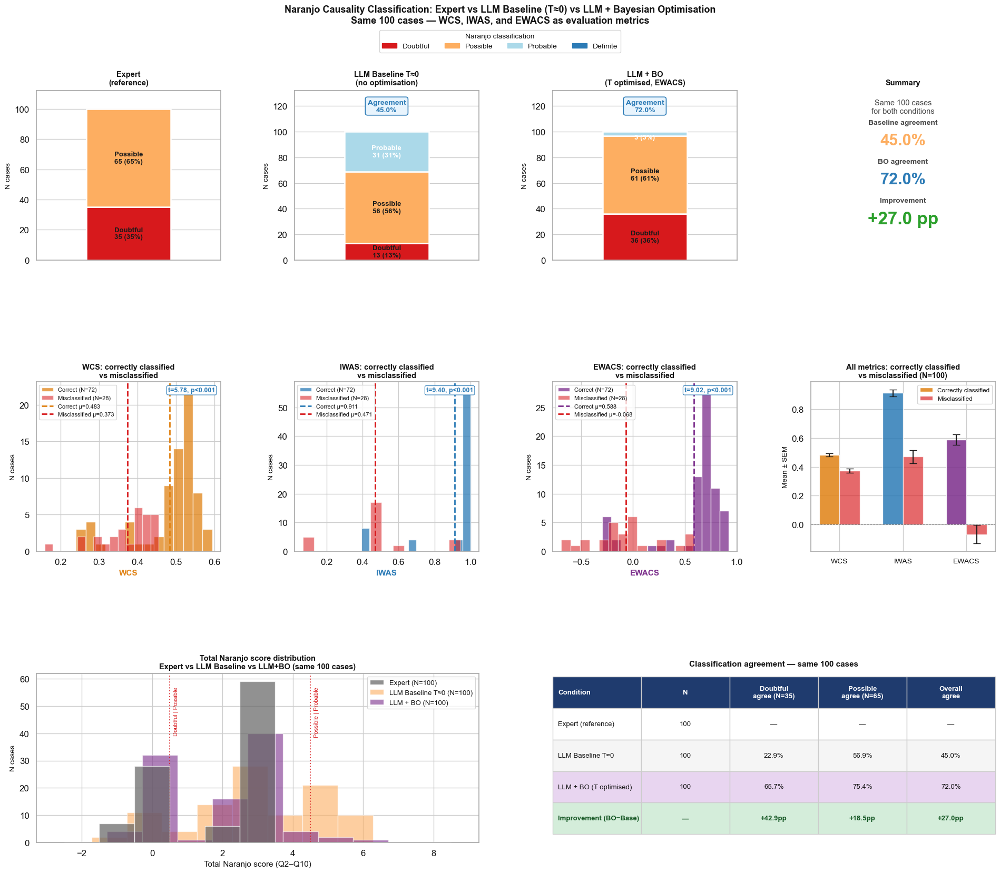
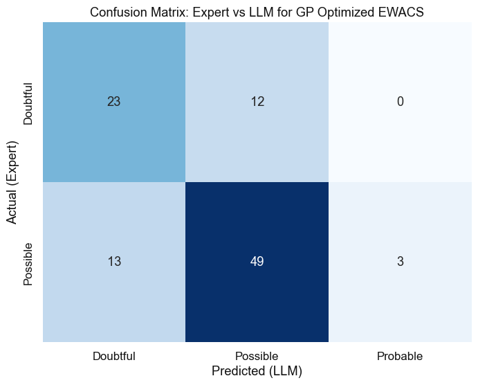
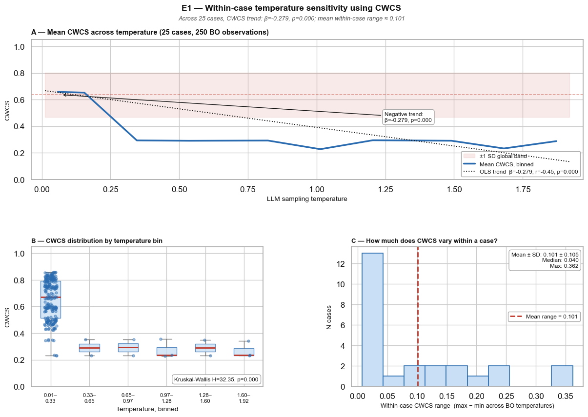

04Supporting results




Developing a Performance Metric as Objective for Bayesian Hyperparameter Optimization
Department of Drug Design and Pharmacology, University of Copenhagen · Novo Nordisk, Safety Operations & Clinical Development Centre Denmark
Individual case safety report volumes are growing faster than expert assessors can keep up. This study asks whether inference-time temperature optimization can improve a large language model’s agreement with expert pharmacovigilance assessors on the Naranjo causality algorithm, applied to FDA Adverse Event Reporting System (FAERS) reports — and develops the Gaussian-Process–compatible performance metrics needed to make that optimization possible.
A Bayesian optimizer needs a single continuous scalar that is sensitive to output quality. Four composite metrics were developed, each combining question (score) agreement and reasoning agreement in a different way. $a_q$ is the agreement flag, $H(q)$ the Shannon entropy of expert scores, and $e_q^{\text{LLM}}, e_q^{\text{exp}}$ the sentence embeddings of the reasoning texts.
CWCS multiplies a soft (continuous) score-agreement term $\lambda_q$ by a reasoning-similarity term rescaled to $[0,1]$, weighting questions by their maximum Naranjo score $M_q$. It is bounded in $[0,1]$ and continuous in both components, giving the Gaussian Process a smoother response surface than the binary-agreement metrics.

| Condition | Overall | Doubtful | Possible |
|---|---|---|---|
| Baseline (T = 0) | 45.0% | 22.9% | 56.9% |
| EWACS-optimized (GP) | 72.0% | 65.7% | 75.4% |
| CWCS-optimized (GP) | 64.0% | 77.1% | 56.9% |
| CWCS-optimized (TPE) | 61.0% | 80.0% | 50.8% |






The repository contains the full analysis pipeline and the diagnostic notebook used to generate every figure above.
llm-naranjo-bo/ ├─ index.html ← this page (GitHub Pages) ├─ README.md ├─ notebooks/ │ ├─ naranjo_bo_pipeline.ipynb ← metrics, GP & TPE optimization, figures │ └─ anisotropy_diagnostic.ipynb ← embedding anisotropy / whitening check ├─ manuscript/ │ ├─ Manuscript_tracked.docx │ └─ Supplementary_Materials.docx └─ figures/ ← exported result figures
pip install pandas numpy scipy scikit-learn sentence-transformers \
torch gpytorch botorch optuna openpyxl openai
jupyter lab notebooks/naranjo_bo_pipeline.ipynb
paraphrase-multilingual-mpnet-base-v2.